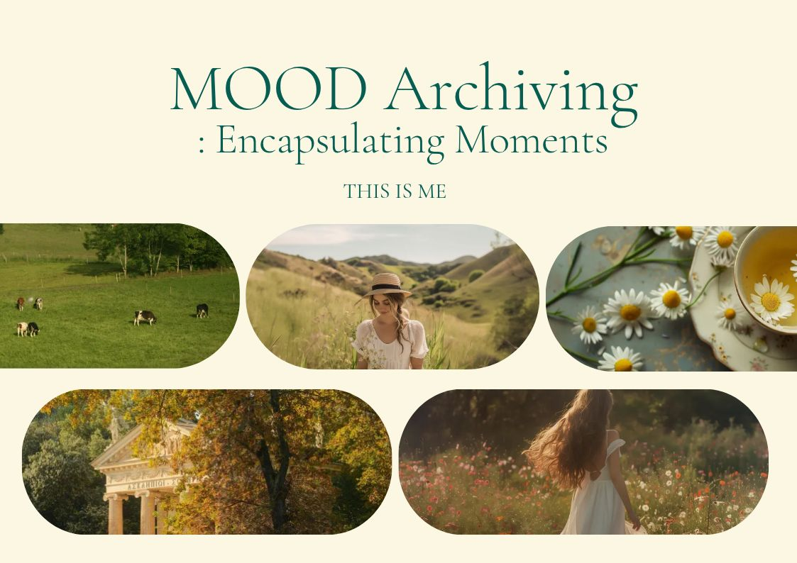
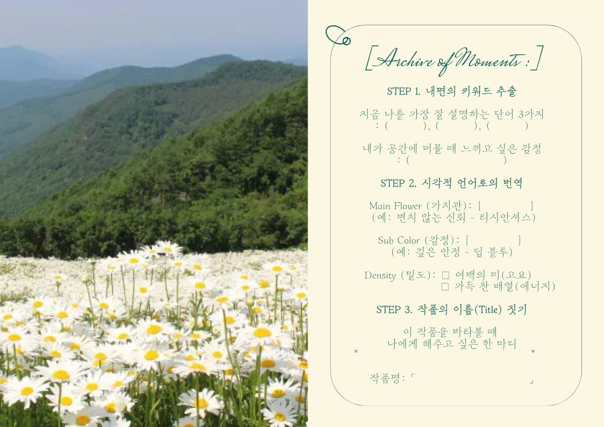
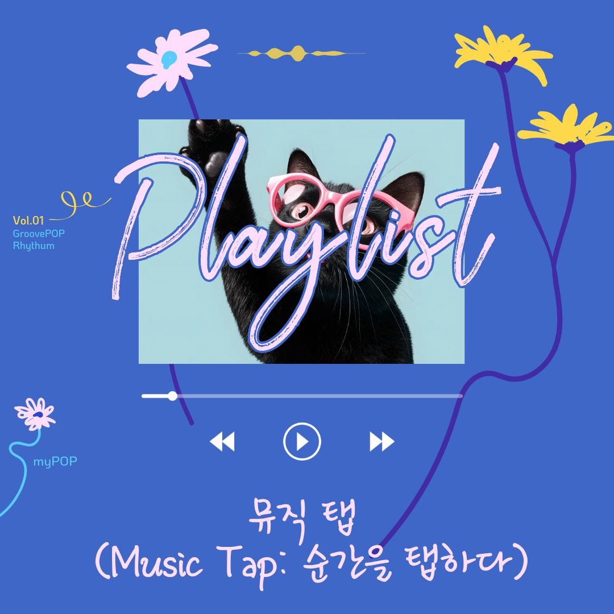

가치관을 박제하다
무드 아카이빙은 단순히 물건을 만드는 것을 넘어, 당신이 지닌 고유한 삶의 태도와 가치관을 투명한 레진 속에 영원히 가두는 예술적 기록 과정을 지향합니다. 흔들리지 않는 당신만의 북극성을 시각적 오브제로 만나보세요.
당신의 가치관은 어떤 형상인가요?
세상의 소음 속에서 나를 지키는 가장 강력한 힘은 '나다움'을 아는 것입니다. 우리는 고순도 레진 공예의 정밀함과 심도 깊은 상담을 결합하여, 잡히지 않는 마음의 형태를 실체화합니다.

전문적인 아카이빙 프로세스
Step 01. 가치관 워크북: 60여 개의 질문지를 통해 내면의 키워드를 도출합니다.
Step 02. 디자인 레이아웃: 추출된 키워드를 컬러, 질감, 오브제로 치환하여 구도를 설계합니다.
Step 03. 레진 아카이빙: 황변 저항성이 높은 고품질 레진을 사용하여 당신의 무드를 투명하게 보존합니다.

Craftsmanship & Resin
레진은 찰나의 시간을 정지시키는 힘을 가집니다. 우리는 수많은 기포 제거 공정과 정교한 샌딩 작업을 통해, 마치 물방울 속에 가치관이 맺힌 듯한 극강의 투명도를 구현합니다. 이는 단순한 취미를 넘어선 '전문 아카이빙'의 결과물입니다.

내면의 풍경을 그리다
우리는 질문합니다. "당신을 가장 평온하게 만드는 색은 무엇인가요?", "어떤 문장이 당신의 밤을 지키나요?" 이 질문들에 대한 답이 모여 하나의 작품이 됩니다. 무드 아카이빙은 당신의 대답을 시각적 언어로 번역합니다.
Music Tap

NFC 기술을 활용하여 작품에 스마트폰을 태그하면,
당신의 가치관과 어울리는 선율이 흐릅니다.
시각과 청각을 아우르는 완벽한 아카이빙을 경험하세요.